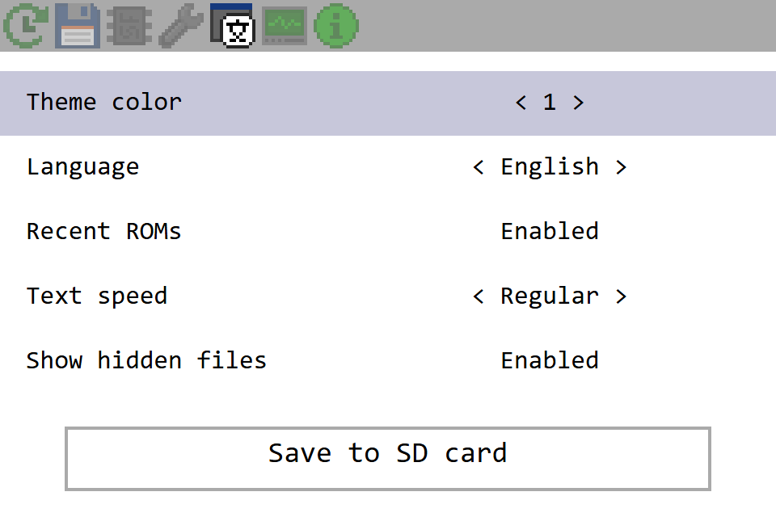
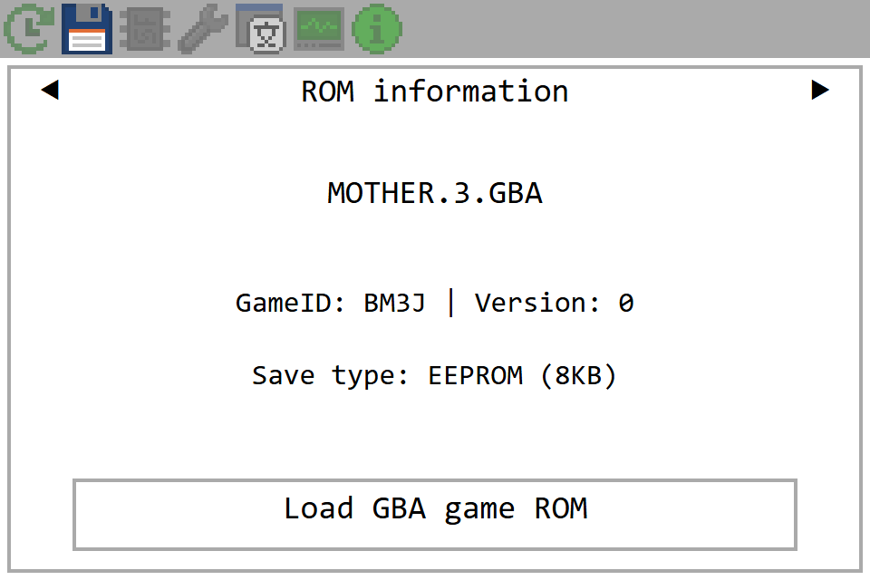
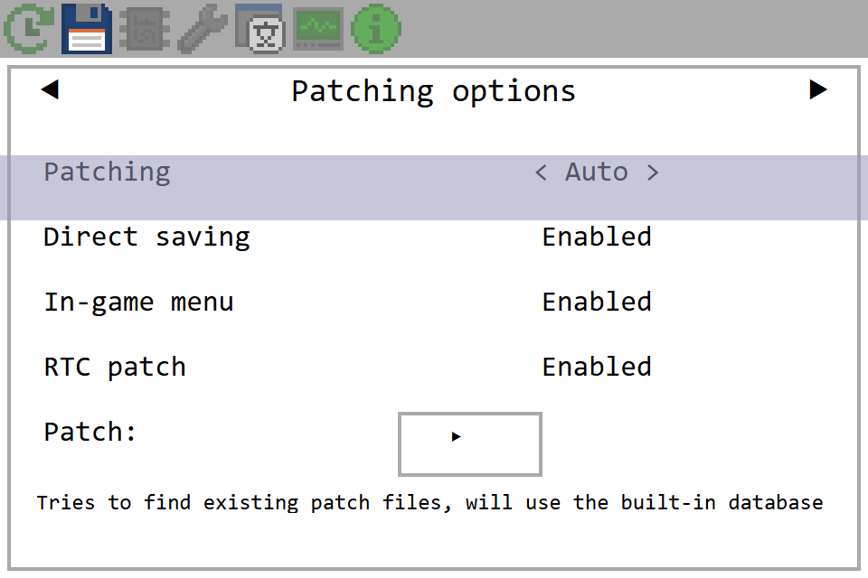
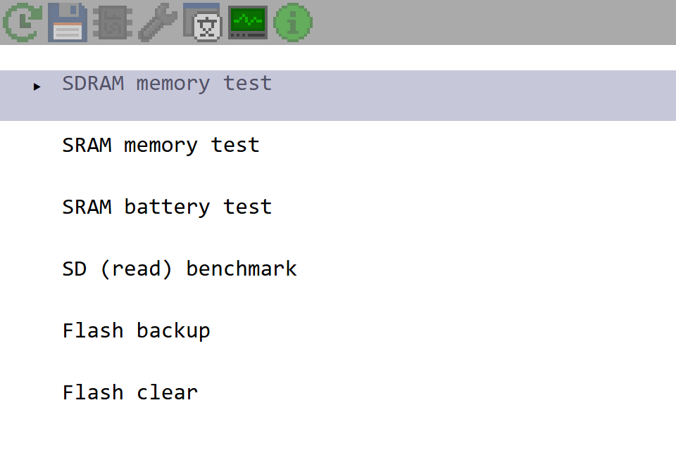
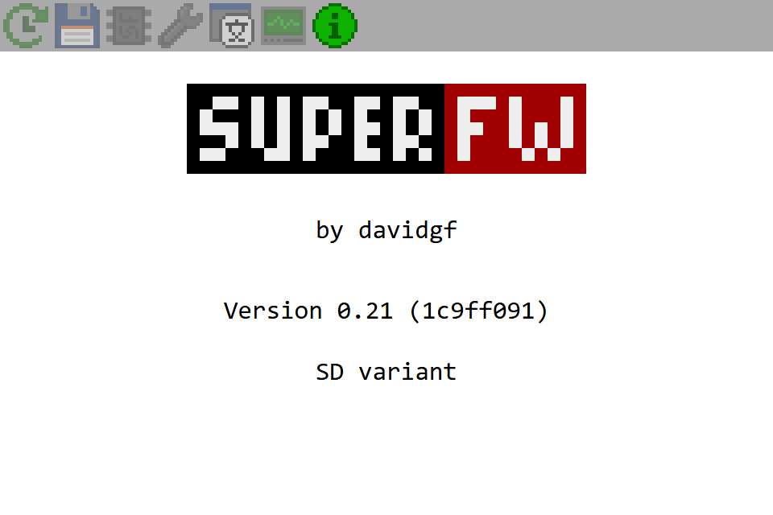
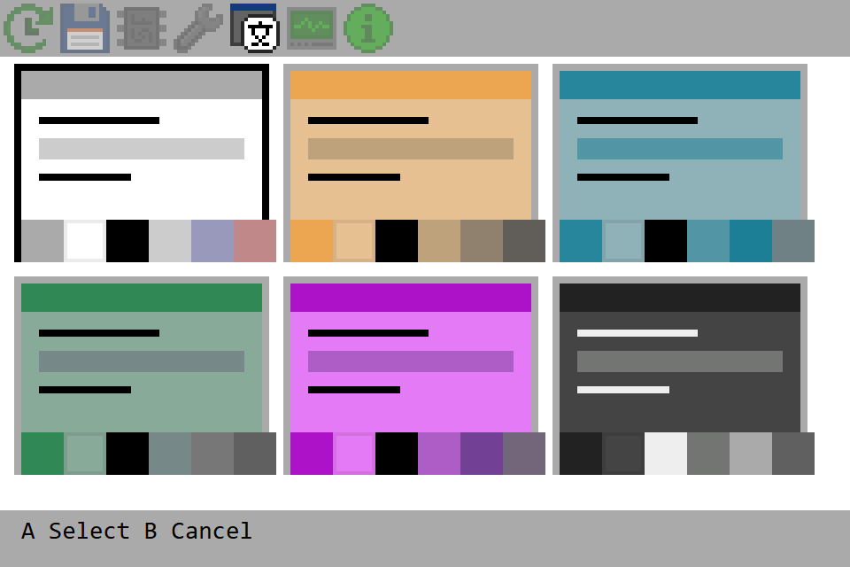
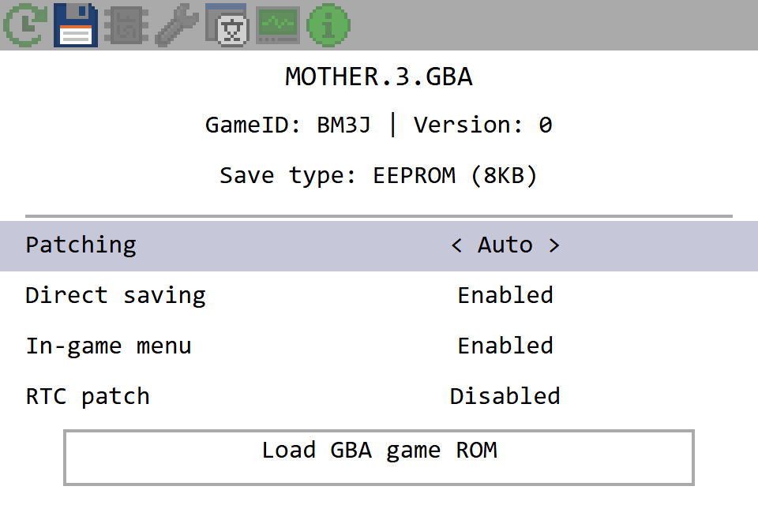
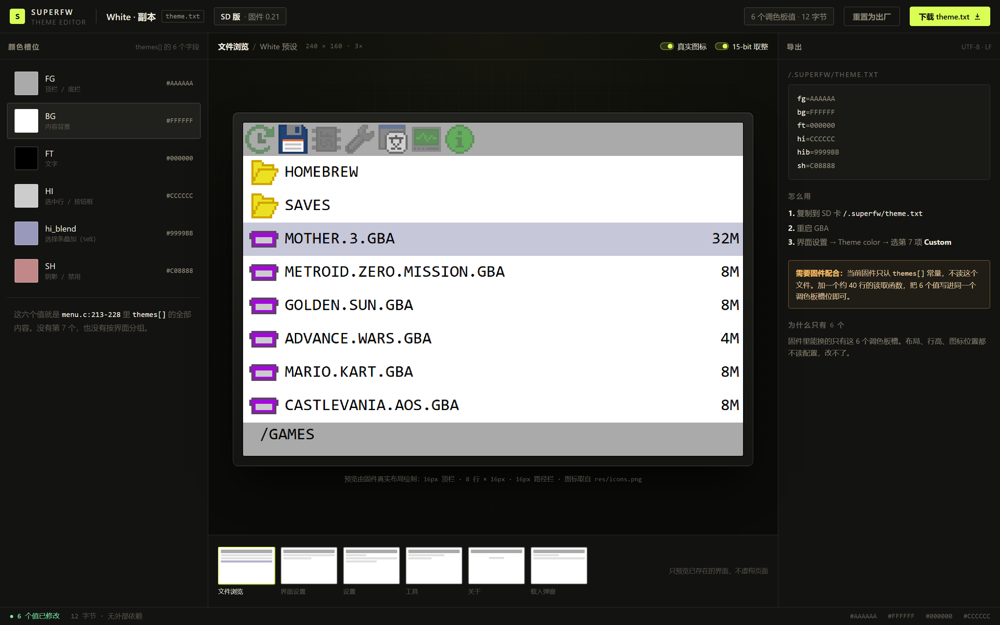

先画出它真实的样子，再谈改什么。
你的判断是对的：之前那些界面里，很多东西固件里根本不存在。这一版全部按 src/menu.c 的绘制代码逐行复原——包括真实的图标、真实的行高、真实的版本号——然后再给出三个只动真实数据的提案。
先认账：我编了什么
对。下面这些是我编的，不是它的样子。
| 我写的 | 代码里实际是 | 性质 |
|---|---|---|
| 固件 1.6.2 / 1.4 / 1.5 三条线 | VERSION_WORD = 0x15 → 版本 0.21 | 版本号整体虚构 |
| 7 个语义角色（Surface/Accent…） | themes[] 只有 6 个字段：fg / bg / ft / hi / hi_blend / sh | 多编了一个角色 |
| 调色板 14/16 槽位、ΔE、体积预算 | 主题只写 4+4 个调色板槽，不涉及 OBJ 槽位分配 | 整套指标虚构 |
| theme.bin / /.superfw/themes/ | 不存在。固件不读取任何主题文件 | 文件格式虚构 |
| 首页 / 继续游玩 / 2 天前 / 存档 3 | 没有首页；recent 只存路径与 NOR 标志，无时间戳、无存档计数 | 页面与数据虚构 |
| SD 剩余 6.2G | t_card_info 只有总容量 block_cnt，没有空闲空间 | 数据不存在 |
| 5 个场所竖栏 / START 命令面板 / 排序 / 视图 / 搜索 | 7 个顶部标签；浏览器只有 A/B/方向键/SELECT，没有排序、视图、搜索 | 导航与功能虚构 |
| 24px 双行列表、游戏码、封面图 | 只有一种 8×16 字体，行高 16px；游戏码只在载入弹窗里读，不进列表 | 布局能力虚构 |
| 兼容矩阵（1.4/1.5/1.6） | 没有这条版本线，也没有多版本主题格式 | 整页虚构 |
它真实的样子
以下六屏按 menu.c 的坐标逐行还原：16px 顶栏（7 个 16×16 图标）、8 行 × 16px 列表、16px 路径栏；设置页 5 行 × 20px，保存按钮 132–152。图标直接取自 res/icons.png（17 个 16×16），Logo 取自 res/logo.png，配色是默认的 themes[0]「White」。

render_browser：8 行，行高 16，图标 x=2，文件名 x=20，大小右对齐 x=238；顶部右侧是 12/41，底部是当前路径。

render_ui_settings：5 行 × 20px，值居中在 x=170。主题就是这一行 < 1 >——只有序号，没有名字和预览。

真正的「详情页」：文件名、GameID、存档类型。三页（信息/载入设置/补丁设置）靠 L/R 切换。

四行选项 + 一个补丁策略按钮 + 底部动态帮助文字。这些字段真实存在，但藏在一个弹窗的第二页里。

6 项，22px 行距，只有文字和左侧游标，没有图标、没有说明。

真实 Logo、作者、版本（0.21）、构建 flavour（SD / Lite / Chis）。上下键在 4 个信息页之间切换。
这六屏没有任何一格是我"设计"的，全部来自代码：坐标、行高、字号、图标索引都能对上 menu.c 里的调用。差异只在于字体用了系统等宽字体近似 8×16 点阵。
真实数据与动作清单
任何改版只能用下面这些字段和按键。不在表里的，就是需要新写代码或新加存储。
| 类别 | 确实存在的 | 不存在的 |
|---|---|---|
| 文件项 | 文件名、大小、目录/隐藏属性、按扩展名猜的图标 | 时间戳、游戏名、封面、评分、游玩时长 |
| 最近记录 | 路径、是否 NOR（t_rentry 只有 3 个字段） | 时间、次数、存档数量 |
| ROM 信息 | GameID（4 字符）、版本字节、存档类型与大小（来自补丁库） | 出版商、年份、类型、ROM 内部标题之外的一切 |
| 补丁 | 策略（库/引擎/不补/自动）、直存、游戏内菜单、RTC | 补丁版本号、兼容性评分 |
| SD 卡 | 容量、厂商、OEM、产品名、SDHC、生产年月 | 剩余空间、读写速度实测值（仅工具有 benchmark） |
| 按键 | 方向键、A、B、L、R、SELECT；START 在浏览器里未绑定 | 排序、视图切换、搜索、长按 |
| 主题 | 6 组内置配色（每组 6 个值），序号 1–6 | 主题名、自定义颜色、主题文件 |
只改真实的东西：三个提案
P1 · 主题选择器：把 6 个序号变成 6 张预览
现有的 themes[] 就躺在 ROM 里，6 组颜色在运行时都能拿到。不需要新数据，只需要一个新的渲染函数：3×2 网格，每格画出用该配色渲染的迷你界面 + 6 色条。选中项加黑框，A 确认，B 取消。

6 个格子用的就是 themes[0..5] 的真实色值；小屏里的顶栏、文字、选中条就是该主题下的实际观感。
P2 · 把三页弹窗合并成一页
载入弹窗现在分三页（信息 / 载入设置 / 补丁设置），要按 L/R 来回切。字段其实只有 7 个：文件名、GameID、存档类型、补丁策略、直存、IGM、RTC。一屏 16px 行足够放下，主操作固定在底部。

没有新增字段，只是把已经读进 t_load_gba_info 的东西一次摆出来。少两次翻页。
P3 · 让主题真的可改：theme.txt（6 行，12 字节）
这是"主题修改器"能做到的最小真实版本：固件启动时读 /.superfw/theme.txt，把 6 个十六进制值写进同一组调色板槽，主题选择里多出第 7 项 Custom。网页端只负责改这 6 个值和预览，不假装能改布局。

左边就是 themes[] 的 6 个字段，中间是用真实布局渲染的预览，右边是导出的 6 行文本。没有语义角色、没有槽位预算、没有兼容矩阵。
代价
| 提案 | 新增数据 | 固件改动 | 网页改动 | 风险 |
|---|---|---|---|---|
| P1 主题选择器 | 无 | 约 60 行渲染 + 15 行按键 | 无 | 低 |
| P2 合并详情页 | 无 | 约 80 行（替换 3 个 render） | 无 | 低 |
| P3 theme.txt | 6 × 2 字节 | 约 40 行读取 + 20 行接入 | 6 个色值输入 + 预览 | 低（失败回退出厂） |
| 上一版的布局运行时 | 1.2 KB 描述 | 3 KB 运行时 + 重写全部 render | 整套结构编辑器 | 高（内存/帧率/兼容） |
前三项加起来不到 220 行 C，不动渲染管线，不引入新格式解析器。最后一行是上一版提的方案——它仍然可行，但那是另一个项目，不该混在"主题修改器"里卖。
下一步
三个都能落地，建议一起做 P1+P3
P1 让"选主题"这件事第一次有预览；P3 让"改主题"第一次成立。两者共用同一套调色板写入口，加起来约 135 行 C + 一个单页网页。
- P1 + P3：主题选择器 + theme.txt 读取 + 网页导出。推荐，一次把"选"和"改"补齐。
- 只做 P3：先让自定义配色跑通，选择器还是老样子（< 7 >）。
- 先做 P2：不动主题，先把三页弹窗合成一页，验证"改布局"的手感。